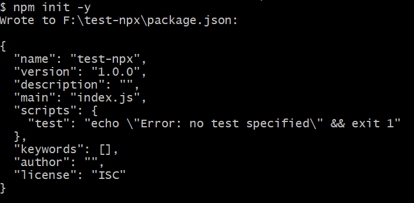
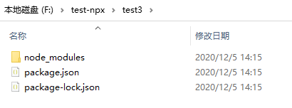
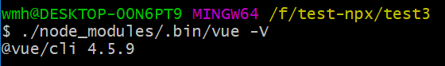
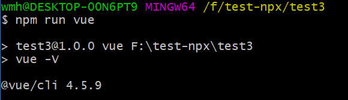
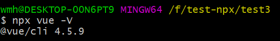
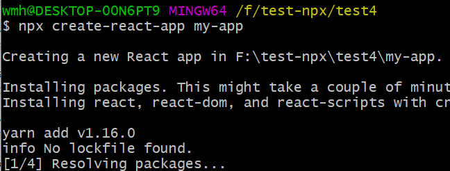
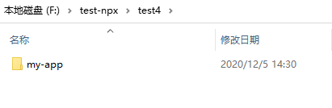
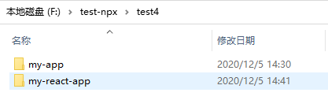

你不知道的npm init
前言
最近在捣鼓egg 跟 koa，看到egg官网文档快速初始化是这么写的：
$ mkdir egg-example && cd egg-example
$ npm init egg --type=simple
$ npm i
手动黑人问号脸…，看来npm init还有我不知道的用法, 我们来进行”刨根问底”
package.json
一个标准nodejs项目，package.json就是项目的入口与说明描述。其中常用字段含义如下：
name: 项目的名称
version: 项目的版本
description: 项目的描述信息，在NPM中描述包的重要搜索内容
keywords: 一个数组，从字面意思也可知道描述项目的关键词，也有利于搜索
license: 该项目的协议，是否允许商用等权限，有MIT、ISC、GPL等
author: 项目的作者
contributors: 项目的贡献者
main: 项目的入口文件
private: 是否是私有库
bin:用来指定各个内部命令对应的可执行文件的位置
files:项目根目录的文件夹名, 如：["lib", "src", "package", "types"]
repository:记录项目代码所在的资源库
homepage:项目主页URL
bugs:提交bug的地方
style:指定样式文件所在的位置
scripts:指定了运行npm命令缩写
dependencies: 项目运行所依赖的模块
devDependencies: 项目开发所需要的模块，在生产中不需要
peerDependencies:用来供插件指定其所需要的主工具的版本
其中，bin的作用有点类似别名：
{
"bin": {
"test": "./bin/test.js"
},
"script": {
"start": "test build"
}
}
peerDependencies的作用举个例子：A模块是B模块的插件，然而用户安装了B模块1.0版本，但是A插件只能和2.0版本的B模块一起使用，这时需要提醒用户需要安装的是B的2.0版本
{
"peerDependencies": {
"vue": "^2.5.17"
}
}
npm init
npm 官方提供了 npm init 命令帮助我们快速初始化 package.json 文件, 相信大家都用过，需要一步步确认。同时还支持添加参数 -y（yes的意思） 来快速初始化

随着技术的快速发展，发现初始化 package.json 已经无法满足大家的需求了，越来越多的项目需要进行整个项目的初始化。很多项目也会开发针对自己项目的脚手架工具，例如 vue-cli, create-react-app。运行这些工具需要先使用 npm install -g 全局安装这些脚手架工具，然后利用脚手架再来初始化项目，如vue项目的初始化：
npm install -g @vue/cli
vue create hello-world
从npm@5.2.0 开始，安装npm时自动提供了 npx 命令
npx
那npx到底有啥用？主要有两个用途：
轻松地运行本地命令
通常我们安装指定node包（以@vue/cli为例），需要运行：
npm install @vue/cli
此时本地项目就会安装对应的node_modules:

如果想使用vue命令的话，运行
vue --V
那么毫无意外，一定会报错，因为只有全局安装的包才可以直接调用，或者直接指定路径调用

又或者通过自定义script脚本，通过npm 来进行调用：
"scripts": {
"test": "echo \"Error: no test specified\" && exit 1",
"vue":"./node_modules/.bin/vue -V"
}

但npx 出现以后，我们可以更优雅的执行本地命令

npx 的原理很简单，就是运行的时候，会到node_modules/.bin路径和环境变量$PATH里面，检查命令是否存在
全局命令免安装
npx另一个重要的优点是，可以执行未安装的包的命令，例如：
npx create-react-app my-app
发现本地或全局都没有安装create-react-app 会先执行安装，安装完毕后，调用create-react-app命令初始化项目：

并且create-react-app会在下载使用完被删除

此时我们再回过头来看最初的问题：npm init egg --type=simple 又是怎么完成初始化的？
npm init <initializer>
npm官网文档对npm init <initializer> 是这样描述的
npm init <initializer> can be used to set up a new or existing npm package.
initializer in this case is an npm package named create-<initializer>, which will be installed by npx, and then have its main bin executed -- presumably creating or updating package.json and running any other initialization-related operations.
同时举了个例子：
npm init react-app ./my-react-app
运行后，发现与上面的npx create-react-app my-app结果是一致的

--type=simple肯定是参数，所以 npm init egg 其实就是 npx create-egg
npx create-egg
create-egg的仓库地址为：https://github.com/eggjs/create-egg
可以看到：package.json中bin命令为：
{
"bin": "./bin/create-egg.js"
}
而./bin/create-egg.js内容就一句话：
#!/usr/bin/env node
'use strict';
require('egg-init/bin/egg-init');
所以，其实最终执行的还是egg-init中的代码。至于egg-init中怎么执行的，有兴趣的可以接着看下去，本文不再深究。